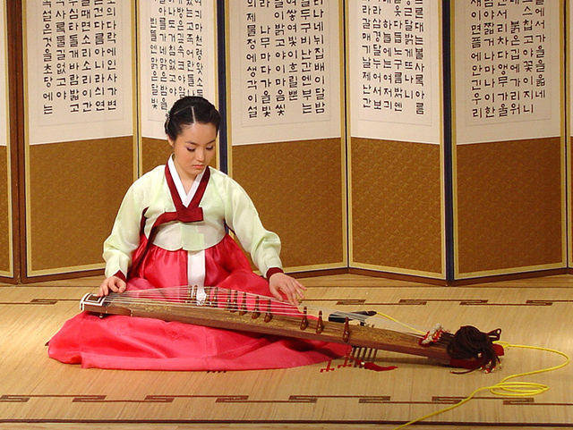
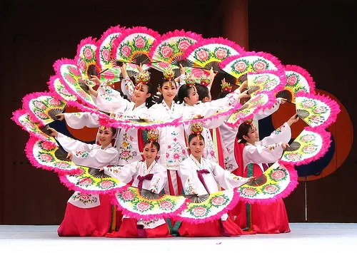
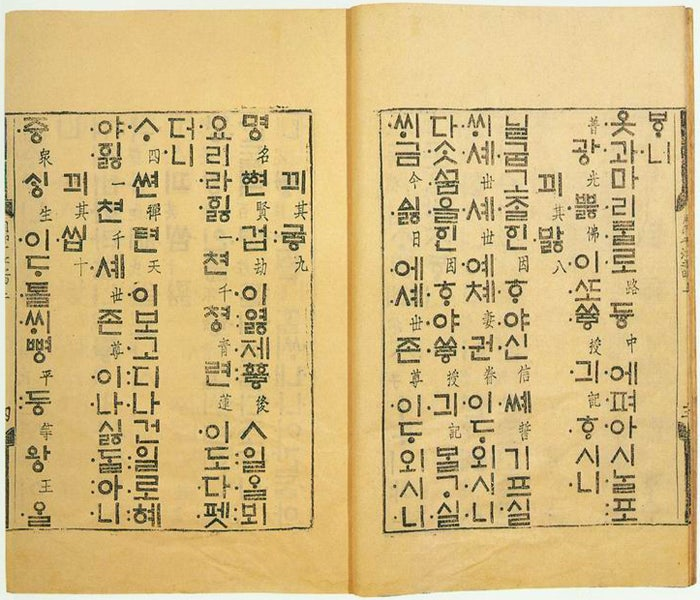

Dél-Korea hagyományai
A koreai kultúra a történelmi Koreában gyökerező kulturális jegyeket jelenti, melyeken a mai Észak-Korea és Dél-Korea kultúrája alapszik. A két államra szakadás következtében ma már Észak és Dél kultúrája sok tekintetben különbözik.
Zene
A hagyományos koreai zenét koreai nyelven kugaknak nevezik, melynek jelentése „nemzeti zene”. Ide tartozik az úgynevezett udvari zene, a népzene, valamint a sámánizmushoz és buddhizmushoz kapcsolódó rituális zene.

Tánc
A koreai táncművészetet (한국 무용, hanguk mujong) három nagy csoportra lehet osztani: hagyományos táncokra (전통 무용, csonthong mujong), a japán megszállás idejétől a 70-es évekig tartó átmeneti korszak „új táncaira” (신무용, sinmujong), melyek tulajdonképpen modern elemekkel kevert hagyományos táncok voltak; valamint az úgynevezett „kreatív táncokra” (창작무용, cshangdzsak mujong).
A hagyományos táncoknak további három csoportja létezik: az udvari táncok (정재무, csongdzsemu), melyek lehetnek kínai illetve koreai eredetűek; a néptáncok (민속무용, minszok mujong), valamint a rituális vagy vallásos táncok (제의무용, cseimujong) csoportja. A néptáncok közé sorolják a falusi eredetű néptáncokat, mint a thalcshum, ami maszkos táncokat jelöl, valamint a nongakot, a parasztok által játszott zenét, és az azt kísérő táncokat. Néptáncnak számítanak a kifejezetten színpadra tervezett népies táncok is. A rituális táncok közé tartoznak a sámántáncok (무무, mumu), buddhista táncok (작법, csakpop) és a konfuciánus táncok (일무, ilmu).
A konfuciánus és buddhista táncok, valamint az udvari táncok egy része kínai eredetű, ennek ellenére hagyományos koreai táncként szokás számon tartani őket. A hagyományos táncok részét képezik Dél-Korea kulturális örökségvédelmi programjának.

Kalligráfia
A kalligráfia egy fehér papírlapon ecsettel és fekete tintával fejezi ki a koreai karakterek szerkezeti szépségét. Az egyes kalligrafikus alkotások esztétikája összetételétől függ: például a pontok és vonalak - nagy vagy kicsi, hosszú vagy rövid - egyensúlyától és arányától, valamint az üres tér elhelyezkedésétől.
